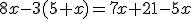
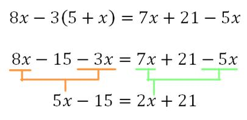
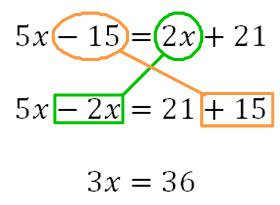
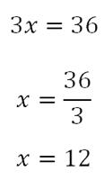
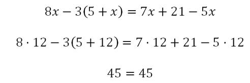
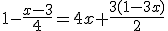
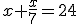
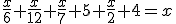

3.1. Ecuaciones de primer grado
Importante
Cuando buscamos la solución de una ecuación lo que estamos buscando en realidad es un número que, al sustituirlo por x, verifique la igualdad.
La resolución por tanteo consiste básicamente en ir probando y darle valores a la incógnita x hasta que se igualen ambos términos.
Por ejemplo, supongamos que tenemos la ecuación: 3x - 1 = 11 + x. Vamos a sustituir x por algunos valores y veamos qué pasa.
| Valores |
3x - 1 = 11 + x | Observaciones |
| Si x = 2 |
3 · 2 - 1 = 11 + 2 5 = 13 |
No se igualan los miembros.
Necesito aumentar el valor del primero. |
| Si x = 4 |
3 · 4 - 1 = 11 + 4 11 = 15 |
Siguen sin igualarse. |
| Si x = 6 |
3 · 6 - 1 = 11 + 6 17 = 17 |
La solución de la ecuación es x = 6 |
Comprueba lo aprendido
No siempre es fácil resolver las ecuaciones por tanteo. Por ello vamos a ver un método general para resolver cualquier ecuación de primer grado. En realidad, es un método que cualquiera usaría para resolver un problema aunque no supiera lo que son las ecuaciones.
Para cómo se usa este método trabajaremos con el siguiente ejemplo:

Paso 1: ELIMINAR PARÉNTESIS Y DENOMINADORES.
Para ello, operamos como en cualquier expresión algebraica, multiplicando el factor que haya fuera del paréntesis o usando los productos notables. Ten cuidado con los signos negativos delante de un paréntesis. Cuando termines, simplifica los términos semejantes.

Paso 2: AGRUPAR TÉRMINOS SEMEJANTES

Paso 3: DESPEJAR LA INCÓGNITA.
Dejamos la incógnita sola quitando su coeficiente, que al estar multiplicando, pasa al otro miembro dividiendo, pero sin cambiar de signo.

Paso 4: COMPROBAR LA SOLUCIÓN.
Es bueno comprobar que la solución es correcta. Para ello, tomamos la solución y la sustituimos por x en la primera ecuación.

Veamos un video en el que se explica la resolución de ecuaciones de primer grado sencillas:
Vídeo de Tutomate alojado en Youtube
Ejercicio Resuelto
Intenta resolver la siguiente ecuación paso a paso. Si no sabes seguir, puedes consultar el resultado.

Paso 1: Quitar paréntesis
Paso 2: Quitar denominadores
Paso 3: Agrupar términos semejantes
Paso 4: Despejar la incógnita
Este paso no es necesario, pues ya la tenemos despejada.
Paso 5: Comprobar la solución:
Curiosidad
Aunque ya vimos que la notación que usamos hoy día para escribir en lenguaje matemático es relativamente actual, las ecuaciones se han resuelto desde la civilización egipcia.
En el Papiro de Rhind (1650 a.C.) se resuelven problemas de un modo análogo al que se usa hoy en día. Uno de los problemas que aparece en este documento es "Un montón y un séptimo del mismo es igual a 24"

Los babilonios, unos 1000 años después, se centraron básicamente en las ecuaciones de segundo grado; y, entre los griegos que, en general, se dedicaron a la geometría, debemos destacar la figura de Diofanto de Alejandría (200 a.C. - 284 a.C.). Diofanto publicó en su obra sus estudios acerca de ecuaciones que tienen soluciones racionales. Como curiosidad, has de saber que su epitafio era un problema que se resuelve con una ecuación de primer grado. Dice así:
"Transeúnte, ésta es la tumba de Diofanto: es él quien con esta sorprendente distribución te dice el número de años que vivió. Su niñez ocupó la sexta parte de su vida; después, durante la doceava parte su mejilla se cubrió con el primer bozo. Pasó aún una séptima parte de su vida antes de tomar esposa, y cinco años después, tuvo un precioso niño que, una vez alcanzada la mitad de la edad de su padre, pereció de una muerte desgraciada. Su padre tuvo que sobrevivirle, llorándole, durante cuatro años. De todo esto se deduce su edad."
Este problema se traduce en la siguiente ecuación, siendo x la edad de Diofanto:
